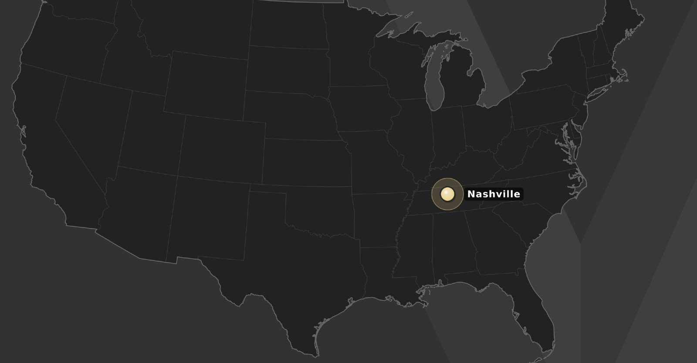
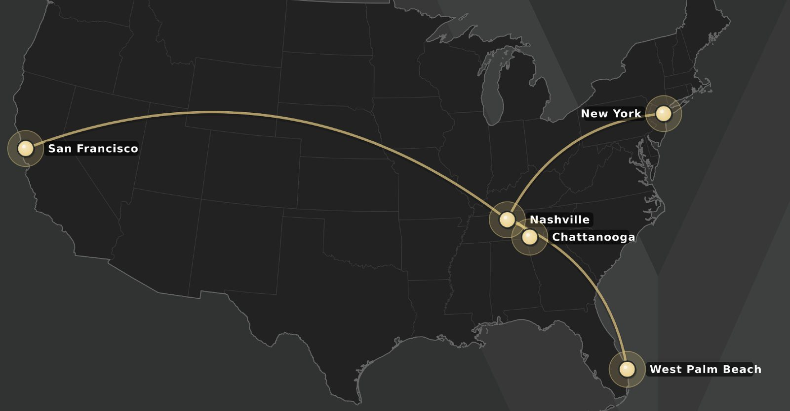

You are a manager now.
Welcome aboard. The simplified build: one idea per screen.
The Vanderbilt Manager Standard. Four expectations of every manager, every week: get the work done through your team, take care of your people, make things better, connect your team to Vanderbilt. Adapted from Gary Yukl’s research on effective leadership behavior: his four categories, his fifteen behaviors. The assessment measures it. This course teaches it.
What you will be able to do
- Describe the one change that makes you a manager, and the three things that are new.
- Apply five management ideas to a real situation and choose the response that fits.
- Sort the tasks of your first year by how often they come up.
- Decide, for a given situation, whether to handle it, ask your HCM, route it, or report it.
- Name the four expectations of the Vanderbilt Manager Standard and the fifteen behaviors inside them.
- Read your assessment results against the standard and set a target for the 90-day retake.
Define the great university of the 21st century, and be it.
The mission is achieved team by team. Yours is one of them. Vanderbilt operates at uncommon speed, agility and scale, in three areas of focus.
- 1 · Exceptional core operationsThe fuel.
Innovative, impactful capabilities so we have the talent, resources and reputation to deliver on our vision.
- 2 · Bold strategic initiativesThe reach.
Increasingly bold initiatives that extend the impact of our education and research mission.
- 3 · Values leadershipThe example.
Advocacy and modeling the role of an essential research university, to stimulate change and meet existential threats.
Read the full vision at vanderbilt.edu
Your responsibility: embody it, and lead your team to achieve it.
- 1Embody it.Speed, agility and scale start with how you work.For example: the timecard question gets answered today, not Friday.
- 2Lead your team to achieve it.Connect the work to the mission and say the why.For example: the new ordering system is not an IT project, it is how Dining feeds five more buildings with the same crew.
- 3Stay in touch with your manager.Strategy, projects, priorities, anything else.For example: before you say yes to another office's big request, your manager hears about it in your 1:1.
A team member asks why the new system matters. A director asks for your whole team on Friday. A timecard is late. One of the three responsibilities answers each one. The next page shows where your team sits in a university that now works from five cities.
Vanderbilt has grown beyond Nashville.
One frame, two maps: the footprint in 2020, and in 2026. Each new site has a reason.
Drag the gold line to 2026, then tap each new site
0 of 4 growth sites seen.


Tap a site on the map, or a name on the left, to open its card.
Your job used to be your work. Now it is the team’s work, and the people.
Most new managers keep doing the old job with a new title. Three things are new.
- New 1You decide.
What matters this week, who does what, what waits.
- New 2You approve.
Timecards, time off, expenses. Timesheets and payroll must be right.
- New 3You are responsible for people.
Fair treatment, a safe place to speak up, a chance to grow.
Three things a manager is not.
When you want to just do it yourself, manage instead.
- ✕Not the person who does everyone’s work.The team waits for a manager who never shows up.
- ✕Not a friend first.Warm and fair. The team needs a manager more than another friend.
- ✕Not the police.You do not investigate, judge or enforce. Report harassment, discrimination, injuries or threats to the right office the same day.
Whose job is it now?
Six things that come up in a first month. Yours now, your team member’s, or PCB’s.
0 of 6 sorted.
A manager is responsible for the work, and for the people who do it.
You do not have to know everything on day one. You do have to ask three questions every week.
- 1Does everyone know what to do this week?
- 2Is anyone stuck, struggling, or waiting on me?
- 3What is coming that the team should hear from me first?
In practice: the dining manager.
Lunch is in forty minutes. Decide what she does, and see what happens.
Five people who help you.
Learn their names in your first week. Tap each one: what they do, when you contact them, and how.
Stay in touch to stay aligned.
Strategy, projects, priorities, anything elseYour go-to in PCB for HR issues, concerns, and support.
The bigger people questions for your business unitIn most business units, for immediate HR issues.
Pay, hiring, performance, policy. First call when unsureTime off for health and family, and injuries at work.
Contact them the same day. FMLA requests go through Origami. Never ask for a diagnosisDiscrimination, harassment, and misconduct reports.
Report the same day. You report; you do not investigateFive ideas every good manager relies on.
You do not need a theory of management. You need a few ideas that hold up, and each one turns into something you can do this week.
- 1 · PrioritiesPut first things first.
- 2 · Clear expectationsClear is kind. Unclear is unkind.
- 3 · Psychological safetyPeople only speak up when it is safe to.
- 4 · PurposeExplain the why, and put the team first.
- 5 · The people workThe people work is the manager’s work.
0 of 5 ideas read.
Sources: the big rocks method (Covey), clear is kind (Brown), psychological safety (Edmondson), start with why (Sinek), the people manager standard (SHRM), the Vanderbilt Manager Standard adapted from Yukl (2012).
Practice it live with Sam.
Practice it live with Priya.
Practice it live with Jordan.
Practice it live with Alex.
Practice it live with Dev.
What Vanderbilt will ask you to do, and when.
Everything a manager owns, by how often it comes up.
- Every week
- A short 1:1 with each person
- Look at work before it is due
- Approve time off, and timecards if anyone is hourly
- Give feedback, and thank people for specific work
- Answer questions, or find who can
- Every month or quarter
- Approve expenses and purchases
- Set and check goals
- Step back: how is the work, and the team, going
- A few times a year
- Performance reviews
- Hiring when a seat opens
- Onboarding a new hire
- Someone leaving
- When it happens · the same day
- Leave, including FMLA: the leave office
- Flexible work: yours to decide
- An accommodation request: ask your HCM
- Harassment or discrimination: report to EOA
- A performance concern: ask your HCM
Build your week.
Three taps: how many people, who is hourly, which day is already full. Then add it to your calendar.
Three taps.
Four doors for anything that lands on your desk.
Some things are yours. Some have a process. Some go to one office the same day.
- Handle itA normal manager task.
Time off, a timecard question, a 1:1, feedback.
Yours. Decide and say yes out loud.
- Ask my HCM firstThere is a process.
Pay, hiring, a performance concern, anything you are unsure about.
Ask before you act.
- The leave officeHealth or family time off.
Surgery, a sick parent, a new baby, hurt at work.
The same day. Never ask for a diagnosis.
- Report to EOADiscrimination, harassment, misconduct.
Anything about how someone is being treated.
The same day. You report, you do not investigate.
Which door?
Five things that land on a manager’s desk in a normal month. Pick the door for each.
0 of 5 decided.
Three things you never do.
Each one protects the person in front of you, and it protects you. The same day means today.
- ✕Never ask for a diagnosis.Leave is leave until the leave office says otherwise. Adjust the work and move on.
- ✕Never investigate a report yourself.Listen, write down what was said, report it to EOA the same day. Promise nothing.
- ✕Never improvise pay, hiring or a performance process.Each has a fair process and a cycle. Your HCM tells you what is possible and when.
Something just landed on your desk. What now?
Pick a situation. The page gives you the first move today, what it sounds like, who handles what, and what never to do.
The Vanderbilt Manager Standard: four expectations.
Every manager meets all four, every week.
- 1Get the work done, through your team.Plan it, say it, check it, fix it.
- 2Take care of your people.Listen and help, grow them, thank them, trust them.
- 3Make things better.Explain the why, describe where you are going, let people try, look back.
- 4Connect your team to the rest of Vanderbilt.Know the people, watch for what is coming, speak up for your team.
Is the team’s work getting done, and done well? You check it and unblock it; you do not do it yourself.
- Planning (plan it)Create clarity
- Clarifying (say it)Create clarity
- Monitoring operations (check it)Coach and develop
- Problem solving (fix it)Address issues
Are people growing, and staying?
- Supporting (listen and help)Build trust
- Developing (grow them)Coach and develop
- Recognizing (thank them)Build trust
- Empowering (trust them)Empower others
Is the team getting better at what it does?
- Advocating change (explain the why)Lead change
- Envisioning change (describe where you are going)Lead change
- Encouraging innovation (let people try)Empower others
- Facilitating collective learning (look back)Lead change
Does the team get what it needs from outside?
- Networking (know the people)Build trust
- External monitoring (watch for what is coming)Lead change
- Representing (speak up for your team)Address issues
0 of 4 expectations opened.
Monday, four asks.
A facilities supervisor starts Monday with four asks. Sort each one into the expectation it belongs to.
Expectation 01 · Yukl: task-oriented behaviorGet the work done, through your team.
When people are not sure what is expected, work comes in late or gets redone, and you find out on the due date. Four habits, tap each to flip it.
In practice.
When people are not sure what is expected, work comes in late or gets redone, and you find out on the due date.
Do this weekPick one person and confirm, out loud, what they own and by when.
Name the habit.
Three moments from a manager’s week. Which habit is each one?
0 of 3 named.
Expectation 02 · Yukl: relations-oriented behaviorTake care of your people.
People stay, and do their best work, for a manager who notices them. Four habits, tap each to flip it.
In practice.
People stay, and do their best work, for a manager who notices them.
Do this weekThank one person for one specific thing.
Name the habit.
Three moments from a manager’s week. Which habit is each one?
0 of 3 named.
Expectation 03 · Yukl: change-oriented behaviorMake things better.
Vanderbilt is asking every team to move faster and improve. That happens in your team, in small ways, every week. Four habits, tap each to flip it.
In practice.
Vanderbilt is asking every team to move faster and improve. That happens in your team, in small ways, every week.
Do this weekHold one ten-minute look-back.
Name the habit.
Three moments from a manager’s week. Which habit is each one?
0 of 3 named.
Expectation 04 · Yukl: external behaviorConnect your team.
Your team needs approvals, information, and a fair hearing from outside. New managers do this job least. Four habits, tap each to flip it.
In practice.
Your team needs approvals, information, and a fair hearing from outside. New managers do this job least.
Do this weekHave coffee with one person your team depends on.
Name the habit.
Three moments from a manager’s week. Which habit is each one?
0 of 3 named.
Where the standard comes from, and how the assessment measures it.
Four conversations, one per expectation.
Have each one out loud, with a character who answers back. You are scored on what you actually say. Pick your world first, so the scene matches your unit.
- 01 · PriyaThe monthly report.
Check where it stands before you promise anything.
- 02 · MarcusTime off for his dad.
Listen, help, route it. Never ask for a diagnosis.
- 03 · TaylorThe system change.
Explain the why before the email lands.
- 04 · Director ReyesThe audit request.
The numbers, the collision, two options.
Turn the page for the first conversation. Mark this topic done when you have had the ones you want.
01 · Get the work done: Priya.
02 · Take care of your people: Marcus.
03 · Make things better: Taylor.
04 · Connect your team: Director Reyes.
Your score, and where it should go.
Ten statements about what you actually do, scored by expectation. Taken before this course, and again 90 days after you finish. The score is a direction, not a grade: every point up is a behavior you do more often.
Your score, by expectation.
Take it once at the start, and again three months after you finish.
The ten statements, and what each one measures.
The four expectations with Yukl’s category for each, the statements under them, and the behavior each one measures.
Five questions.
0 of 5 answered.
One thing. This week.
Pick one thing to do this week. On the next page, tell your manager and mark the course complete.
Four choices, one for each expectation in the Vanderbilt Manager Standard. Each is a single action you can finish in a meeting you already have.
Pick your action above. It drops into this message.
“I just finished the Manager Foundations course. This week I will [action]. Ask me how it went on [date].”
That is the whole course. Come back in 90 days and take the self-assessment again to see what moved.
So your completion is recorded with the Futures Learning Hub.
Your micro modules, next.
The manager responsibilities, one short course each, in Oracle Learning. Start with the track for your lowest expectation.
One item a month, on the habit you are working on.
More in Oracle Learning, and the best from outside Vanderbilt. Oracle links open in a new tab; podcasts and videos are free.
The best from outside Vanderbilt.
Podcasts, books and talks on the habit you are working on. Public and free.
Four short talks.
The ideas from this course, from the people who named them: feedback, delegation, purpose, and safety. Tap play.
Video not loading? Open it on YouTube.
Video not loading? Open it on YouTube.
Video not loading? Open it on YouTube.
Video not loading? Open it on YouTube.
Now manage it the same way.
Four categories, six behaviors, one habit this week. Start it today.
Download the printable guideThe quality of Vanderbilt’s future depends on the quality of its managers today.